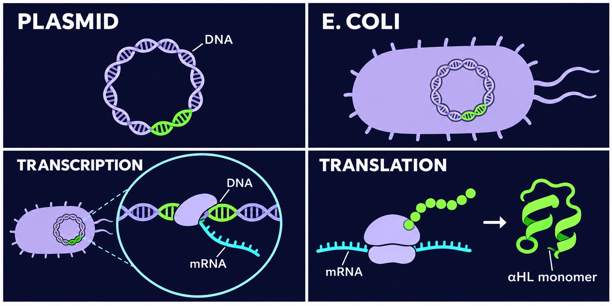

Experimental Details

GUV Preparation
Making GUVs
- The inner aqueous solution was mixed with the lipid-containing oil.
- The mixture was vortexed for 30 seconds to form a W/O emulsion.
- The emulsion was gently layered over the outer aqueous solution.
- The layered sample was left undisturbed for 5 minutes.
- The sample was first centrifuged at 3000 × g for 30 minutes.
It was then centrifuged at 5000 × g for 10 minutes.
Both steps were performed at 24 °C. - After centrifugation, the upper oil layer was removed. A 150 µL aliquot of the GUV suspension was collected and mixed with 300 µL of fresh outer aqueous solution.
The mixture was centrifuged again at 5000 × g for 3 minutes at 24 °C.
The lipid-containing oil, inner aqueous solution, and outer aqueous solution were prepared for emulsion transfer [1].


Lipid-containing oil
The lipids were dissolved in chloroform.
- The chloroform was evaporated with nitrogen gas in a glass tube.
- The tube was dried in a vacuum desiccator for 1 hour to form a lipid film.
- 300 µL of mineral oil was added.
- The lipids were dispersed in the oil by sonication at 60 °C for 60 minutes.
| Component | Final concentration |
|---|---|
| POPC | 5 mM |
| NBD-PE | 0.05 mM |
| cholesterol | 3.0 mM |
Inner aqueous solution
| Component | Final concentration |
|---|---|
| sucrose | 0.3 M |
| Tris-HCl | 10 mM |
| sulforhodamine B | 1 µM |
Outer aqueous solution
| Component | Final concentration |
|---|---|
| glucose | 0.3 M |
| Tris-HCl | 10 mM |
α-Hemolysin Purification
Purifying αHL
αHL was purified as follows.

- The αHL plasmid was expressed in E. coli.
- The protein was purified using the His-tag.
- The sample was desalted and dissolved in buffer (20 mM HEPES, 150 mM NaCl, pH 7).
- Electrophoresis (28 mA, 60 min) was performed to check the purification.
| Component | Final concentration |
|---|---|
| HEPES | 20 mM |
| NaCl | 150 mM |
Pore Formation in GUVs with α-Hemolysin
Forming membrane pores
αHL was added to the inner aqueous solution during GUV preparation for the pore formation assay.
The same lipid-containing oil and outer aqueous solution were used as in the GUV Preparation section. Cholesterol was added to the oil at 3.0 mM to stabilize the membrane and facilitate αHL insertion.
Inner aqueous solution
| Component | Final concentration |
|---|---|
| sucrose | 0.3 M |
| Tris-HCl | 10 mM |
| sulforhodamine B | 10 mM |
| αHL | 25 ng/µL |
The sulforhodamine B stock concentration was 100 mM.
Lipid-containing oil
| Component | Final concentration |
|---|---|
| POPC | 5 mM |
| NBD-PE | 0.05 mM |
| Cholesterol | 3.0 mM |
Outer aqueous solution
| Component | Final concentration |
|---|---|
| glucose | 0.3 M |
| Tris-HCl | 10 mM |
Preparation conditions
The inner aqueous solution and lipid-containing oil were mixed and vortexed for 30 seconds. The emulsion was layered over the outer aqueous solution and left undisturbed for 5 minutes. The sample was centrifuged at 3000 × g for 30 minutes, followed by 5000 × g for 10 minutes, both at 24 °C.
Blocking the Pores with TRIMEB
Blocking αHL pores
αHL was added to the inner aqueous solution at 25 ng/µL.
TRIMEB was added to the outer aqueous solution at 4 mM.
Pore blockage by TRIMEB was then assessed.
Outer aqueous solution
| Component | Final concentration |
|---|---|
| glucose | 0.3 M |
| Tris-HCl | 10 mM |
| TRIMEB | 4 mM |
Inner aqueous solution
| Component | Final concentration |
|---|---|
| sucrose | 0.3 M |
| Tris-HCl | 10 mM |
| sulforhodamine B | 10 mM |
| αHL | 25 ng/µL |
Lipid-containing oil
| Component | Final concentration |
|---|---|
| POPC | 5 mM |
| NBD-PE | 0.05 mM |
| Cholesterol | 3.0 mM |
Attaching DNA to GUVs
Adding and staining DNA
Lipid-conjugated DNA was added to the inner aqueous solution.
After formation, the GUVs were stained with SYBR Gold.
The outer aqueous solution is the same as in GUV Preparation.
The lipid-containing oil does not contain NBD-PE.
Lipid-containing oil
| Component | Final concentration |
|---|---|
| POPC | 5 mM |
| cholesterol | 3.0 mM |
Inner aqueous solution
| Component | Final concentration |
|---|---|
| sucrose | 0.3 M |
| Tris-HCl | 10 mM |
| sulforhodamine B | 1 µM |
| lipid-conjugated DNA | 100 nM |
Outer aqueous solution
| Component | Final concentration |
|---|---|
| glucose | 0.3 M |
| Tris-HCl | 10 mM |
DNA Purification
Coupling and purifying DNA


Thiol-modified DNA was coupled to a maleimide-functionalized lipid.
The lipid-conjugated DNA was then inserted into the GUV membrane.
The DNA was purified as follows.
- The thiol protecting group was removed with TCEP at room temperature for 30 minutes.
- The DNA was purified using gel beads.
- The DNA was reacted with DOPE-MAL at room temperature for 2 hours.
- The lipid-conjugated DNA was collected by HPLC using a C3 column.
- The DNA concentration was calculated from absorbance at 260 nm.
Deprotection mixture
| Component | Volume (µL) | Final concentration |
|---|---|---|
| SH-DNA | 10 | 20 µM |
| TCEP | 25 | 50 mM |
| KCl | 7 | 140 mM |
| HEPES | 1.25 | 25 mM |
| UPW | 6.75 | — |
| Total | 50 | — |
DNA–lipid coupling
The volume of 5 mM DOPE-MAL in DMSO was calculated for each recovered DNA sample from its concentration and volume. The calculated volume was added to give a 50:1 molar ratio of DOPE-MAL to DNA.
DNA was dissolved in TE (Tris-HCl : EDTA = 10 : 1).
DNA Receptor Dimerization
Testing DNA pairs
Dimer formation in complementary DNA pairs and nonspecific association in noncomplementary pairs were assessed by gel electrophoresis in the absence of GUVs.
All six pairwise combinations of the four DNA strands were tested by gel electrophoresis.
DNA pairs tested（✓ Tested）
| L1 | R1 | L2 | R2 | |
|---|---|---|---|---|
| L1 | ✓ | ✓ | ✓ | |
| R1 | ✓ | ✓ | ||
| L2 | ✓ | |||
| R2 |

DNA stocks were approximately 1 µM. The target concentration was 0.1 µM per strand before loading buffer was added.
View electrophoresis conditions and sample recipes
All six pairwise combinations of L1, R1, L2, and R2 were analyzed on a 10% polyacrylamide gel.
Before adding loading buffer, each strand had a target concentration of 0.1 µM.
The gel was run for 60 minutes at 25 °C with settings of 100 V and 20 mA.
Polyacrylamide gel composition (nominal volume: 10 mL)
| Component | Stock | Amount | Final concentration |
|---|---|---|---|
| MgCl₂ | 1 M | 50 µL | 5 mM |
| TBE | 10× | 1 mL | 1× |
| Acrylamide/Bis (29:1) | 40% | 2.5 mL | 10% |
| Milli-Q | — | * | — |
| APS | 10% | 100 µL | 0.1% |
| TEMED | — | 10 µL | † |
* Milli-Q water was added to bring the mixture to the 10 mL mark before adding APS and TEMED. Confirm whether 10 mL refers to the volume before or after these additions.
† The recorded TEMED concentration is 0.01%. Adding 10 µL to a final volume of 10 mL gives 0.1% (v/v).
Common sample components before loading buffer
| Component | Stock | Amount | Final concentration |
|---|---|---|---|
| Tris-HCl | 100 mM | 1.0 µL | 10 mM |
| NaCl | 1 M | 1.5 µL | 150 mM |
Loading mixtures
| Lane | Sample | 6× loading buffer | Volume loaded |
|---|---|---|---|
| 1 | 10 µL DNA ladder (10 ng/µL) | 2 µL | To be confirmed |
| 2–7 | 10 µL DNA sample | 2 µL | 3 µL |
DNA-Mediated GUV Connection
Three GUV populations with distinct internal fluorescence were used to assess selective DNA-mediated connection.
Phase-contrast images were used to identify vesicles in contact.
Fluorescence images of the same field were used to identify the populations and check for the intended red–nonfluorescent–blue arrangement.

Inner aqueous solution
| Component | Red GUV | Nonfluorescent GUV | Blue GUV |
|---|---|---|---|
| Sucrose | 0.3 M | 0.3 M | 0.3 M |
| Tris-HCl | 10 mM | 10 mM | 10 mM |
| NaCl | 0.15 M | 0.15 M | 0.15 M |
| Sulforhodamine B | 10 mM | — | — |
| Alexa 647 | — | — | 1 mM |
| Milli-Q | — | Same volume as the dye solution | — |
Lipid-containing oil
| Component | Red GUV | Nonfluorescent GUV | Blue GUV |
|---|---|---|---|
| POPC | 5 mM | 5 mM | 5 mM |
| Cholesterol | 3.0 mM | 3.0 mM | 3.0 mM |
| NBD-PE | — | 0.05 mM | — |
For the assessment, phase-contrast and fluorescence images were matched to check whether three contacting GUVs formed a chain with a nonfluorescent vesicle between a red and a blue vesicle.